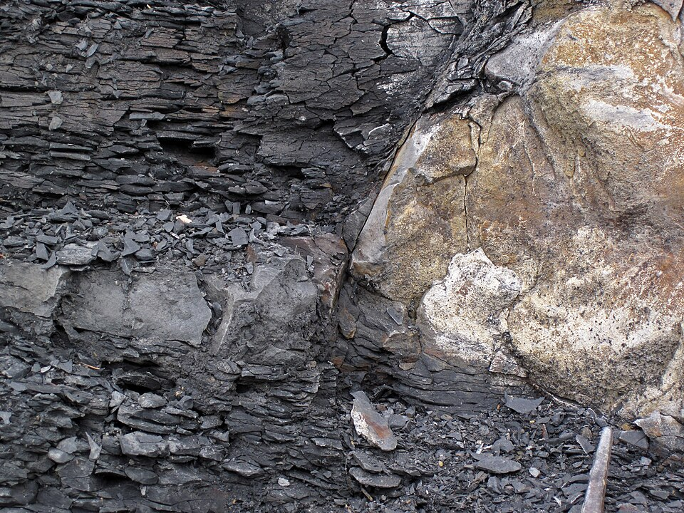
Shale is the most abundant sedimentary rock. It is composed of clay-sized particles (<0.004 mm) and is distinguished from claystone by its fissility — the tendency to split along well-developed parallel planes. The laminations record the original horizontal bedding.
Color ranges from gray to black (organic-rich), red (oxidized iron), or green. The dark gray variety seen here suggests moderate organic content and reducing conditions during deposition.
Forms in low-energy environments where fine particles can settle undisturbed: deep lakes, deep marine shelves, floodplains, and tidal flats. River floodplains commonly produce shale interbedded with coarser channel sandstones.
Teeth test: Smooth (clay-sized). Scratch glass? No. HCl test: No reaction (unless calcium-rich). Fissility: Yes — splits in thin, flat layers.
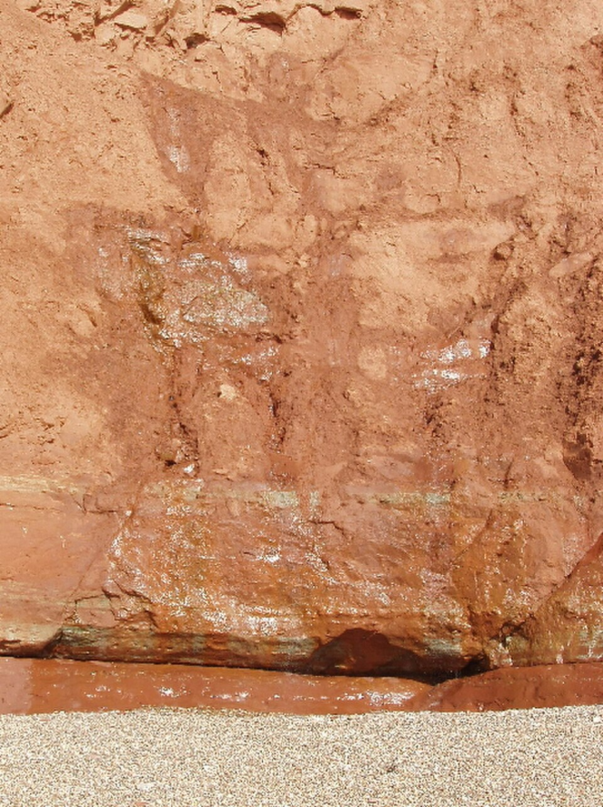
Mudstone and shale are both composed of clay-sized particles, but mudstone lacks fissility — it breaks into blocky fragments rather than splitting in flat layers. This difference reflects the degree of compaction and the development of clay mineral alignment during burial.
Similar environments to shale: floodplains, lake margins, tidal flats. Mudstone may indicate slightly more energetic or less consistently quiet conditions than shale.
Teeth test: Smooth. Scratch glass? No. HCl test: No reaction. Fissility? No — breaks into blocks with conchoidal fracture (key distinction from shale).
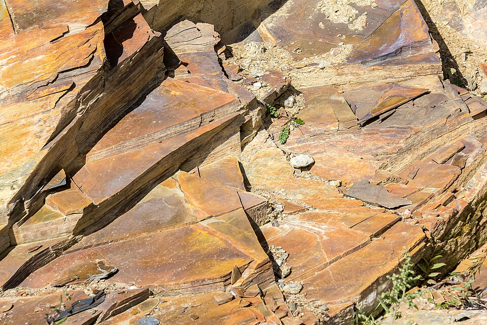
Siltstone is composed of silt-sized particles (0.004–0.06 mm) — too small to see individually with the naked eye but large enough to feel gritty when rubbed on the teeth. This tactile test is the single most reliable way to distinguish siltstone from the finer mudstone and shale.
Forms in environments with moderate energy: river floodplains, deltaic settings, shallow marine shelves. Often occurs as thin beds interbedded with coarser sandstones and finer shales.
Teeth test: Gritty (key feature). Scratch glass? Barely or faintly — silt-sized quartz grains may scratch glass with difficulty. HCl test: No reaction unless calcareous.
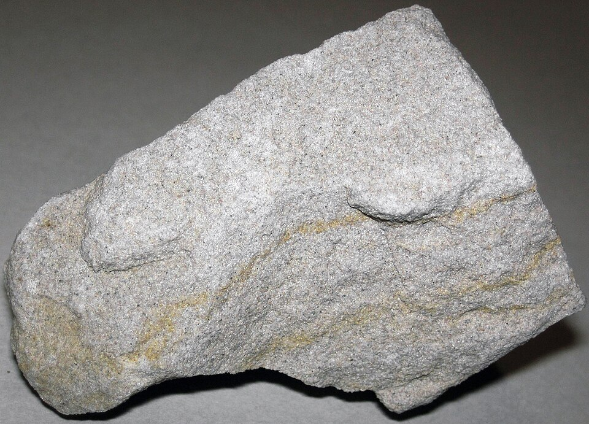
Quartz sandstone contains >95% quartz grains. The high quartz content reflects mineralogic maturity — nearly all other minerals have been destroyed by weathering during long transport. Well-rounded grains indicate extended transport.
Grains are typically cemented by silica (quartz overgrowths), calcite, or iron oxide. The cement type can affect color: silica cement = white/gray; iron oxide = red or orange; calcite = may fizz with HCl.
Classic environments: beaches, aeolian (desert) dunes, shallow marine shelves with strong reworking. All these settings repeatedly sort and abrade grains over long periods.
Grain visibility: Yes — visible grains. Scratch glass? Yes. HCl test: No reaction (unless calcite cement — then fizzes). Dominant mineral: Quartz (glassy appearance).
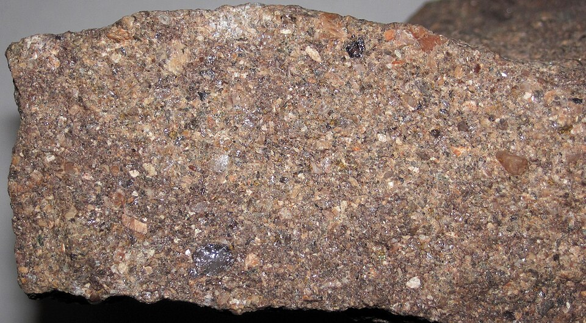
Arkose contains quartz and at least 25% feldspar. The abundant feldspar is the critical clue — feldspar weathers quickly, so its presence indicates the sediment was rapidly buried close to its source, before weathering could destroy the feldspar grains.
Pink to salmon color is characteristic, deriving from potassium feldspar (orthoclase). Angular, poorly sorted grains further confirm limited transport.
Typically forms near uplifting mountain ranges — alluvial fans, river systems adjacent to granite-rich highlands. Classic example: erosion of a granitic batholith shortly after uplift.
Grain visibility: Yes. Scratch glass? Yes. HCl test: No. Key observation: Look for pink feldspar cleavage alongside glassy quartz; angular grains; reddish overall color.
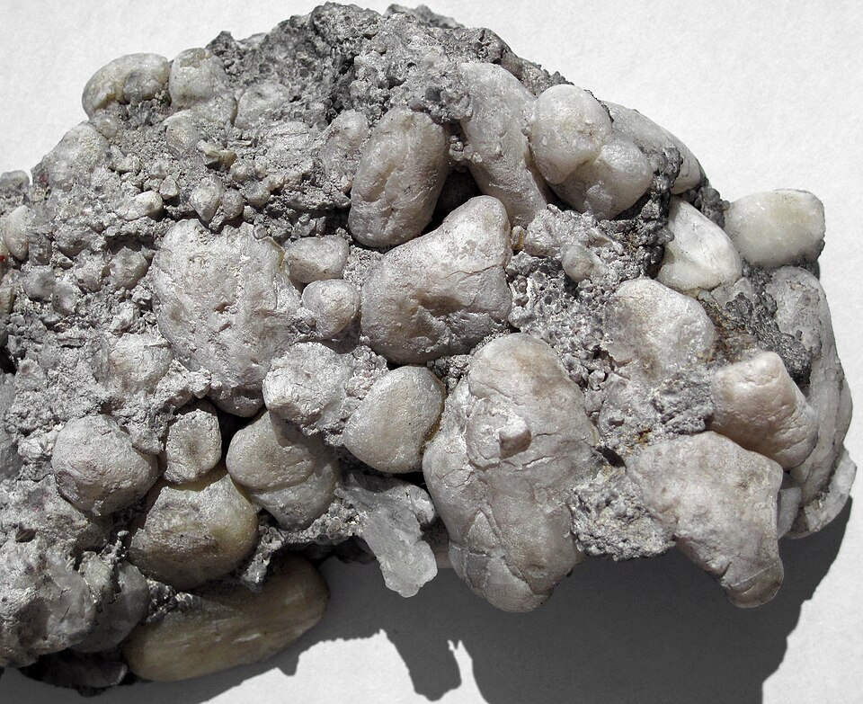
Conglomerate consists of rounded pebble- to boulder-sized clasts (>2 mm) embedded in a finer matrix. The rounded clasts indicate significant transport — edges were abraded during movement by water or other agents.
The clasts can be any rock type (quartz, chert, granite, etc.) and the rock name may be modified accordingly (e.g., "quartz-pebble conglomerate").
River channels (proximal, high-energy), alluvial fans, beaches with high wave energy, glacial outwash. Rounded clasts are the key indicator of fluvial or wave transport.
Conglomerate: Rounded clasts → water/wave transport. Breccia: Angular clasts → little to no transport (rockfall, fault breccia, close-to-source alluvial fan).
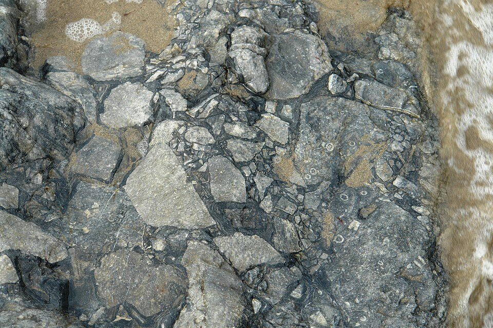
Breccia is identical to conglomerate in grain size (>2 mm) but distinguished by the sharp, angular shape of its clasts. Angular fragments mean they were not transported far — there was insufficient time for water or wind to round the edges.
Rockfall at cliff bases, fault zones (fault breccia), volcanic environments, very proximal alluvial fans. The presence of breccia is a powerful indicator of proximity to a topographic high or fault.
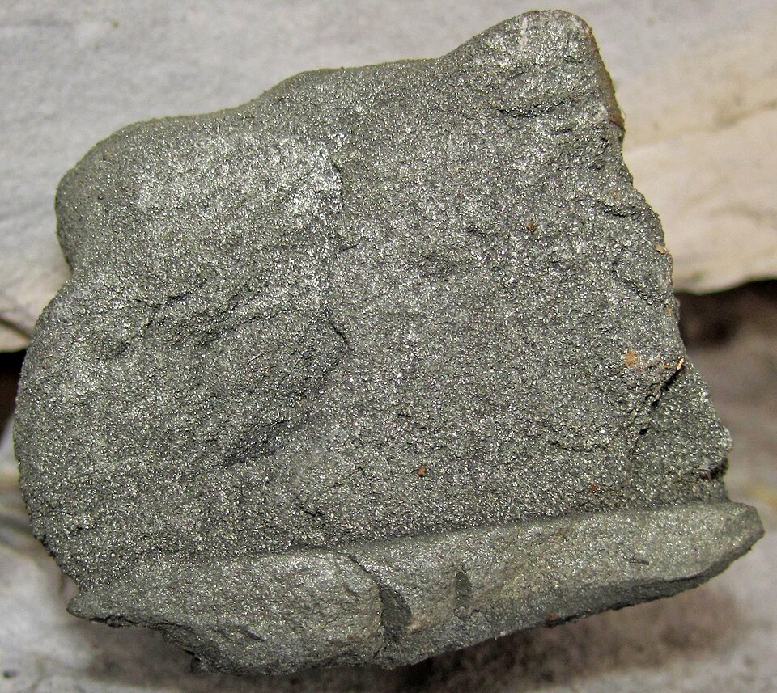
Crystalline limestone has a texture of interlocking calcite crystals. This texture forms through recrystallization of original carbonate material during burial (diagenesis). The crystals give the rock a sugary or sparkling appearance.
HCl test: Vigorous fizzing — diagnostic for calcite. Scratch glass? No (hardness ~3). Cleavage: Calcite has perfect rhombohedral cleavage. Compare with dolostone: Dolostone fizzes weakly; powder fizzes more strongly.
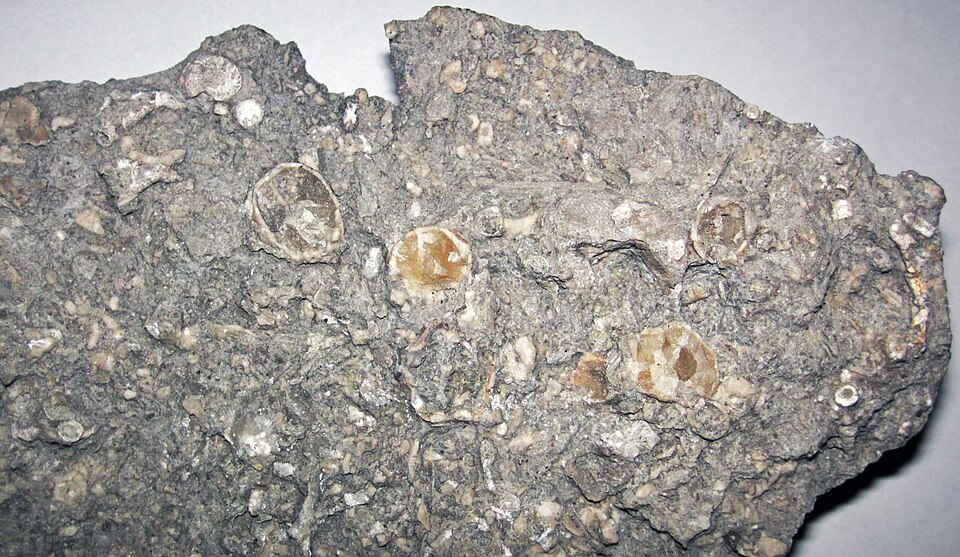
Fossiliferous limestone contains abundant recognizable fossils — shells, coral fragments, crinoid stems, brachiopods — cemented in a fine calcite matrix. The fossils are the skeletal remains of marine organisms that built their shells from calcite or aragonite.
Warm, shallow tropical seas — the outer shelf and platform. Organisms are prolific in these settings, producing massive quantities of shell material that accumulates on the seafloor. Modern analogs: Bahamas, Florida Keys, Great Barrier Reef.
HCl test: Vigorous fizzing. Scratch glass? No. Key observation: Recognizable fossil shapes (shells, coral, etc.) within the rock. If fossils are present, it is either limestone, dolostone, or occasionally coal — use HCl to distinguish.
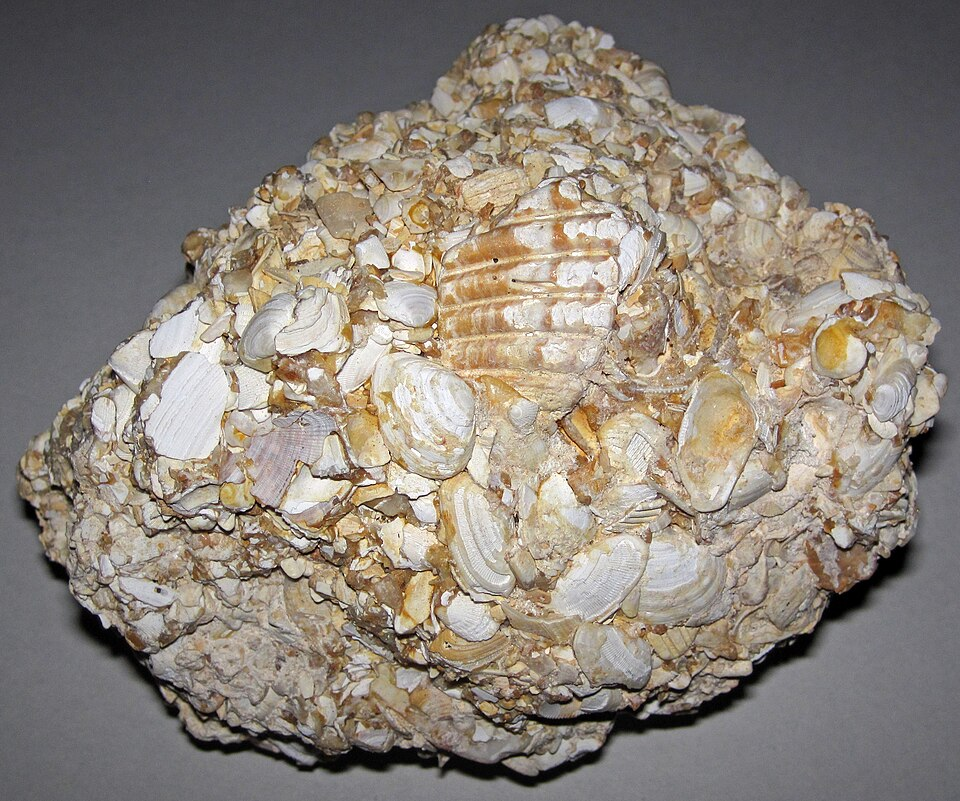
Coquina (from Portuguese for "little shells") is a poorly cemented to unconsolidated accumulation of shell fragments. Unlike fossiliferous limestone, there is very little fine calcite matrix — the shells are the dominant component and the rock is noticeably porous and rough.
Beaches, tidal inlets, and shallow nearshore areas with abundant shell-producing organisms. Classic example: Fort Matanzas in Florida, built with Anastasia Formation coquina.
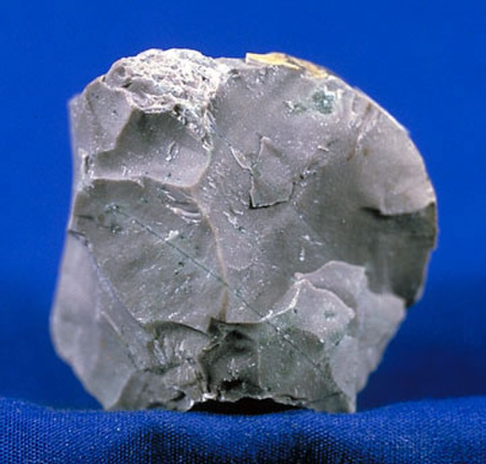
Chert is composed of microcrystalline quartz (SiO₂), derived from the siliceous shells of microscopic organisms (radiolarians, diatoms) or from direct precipitation from seawater. Despite having no visible grains, it is extremely hard (H=7) and breaks with conchoidal (shell-like) fracture.
Chert: Gray to white. Jasper: Red to yellow/brown (iron oxide gives color). Flint: Dark gray to black (organic matter content); found in chalk deposits. All share the same hardness and conchoidal fracture.
Chert nodules are commonly embedded within limestone. If only part of your sample scratches glass, the hard part is chert and the rest may be limestone. Use HCl to test the non-chert portion.
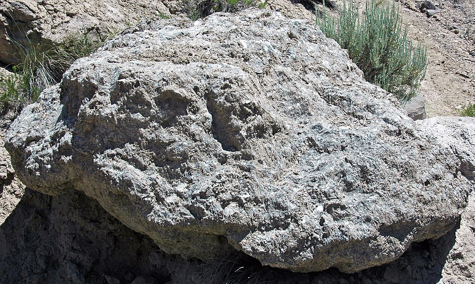
Rock gypsum is the lithified form of the evaporite mineral gypsum (CaSO₄·2H₂O). Its diagnostic property is extreme softness — hardness 2, meaning a fingernail will scratch it. This makes it unmistakable compared to other light-colored sedimentary rocks.
Fine-grained alabaster is a variety of massive gypsum used for sculpture. Selenite gypsum has large transparent crystals.
Evaporite basins: restricted marine lagoons, desert playa lakes, and inland seas that periodically evaporate. Gypsum is the first major evaporite to precipitate as salinity increases (before halite).
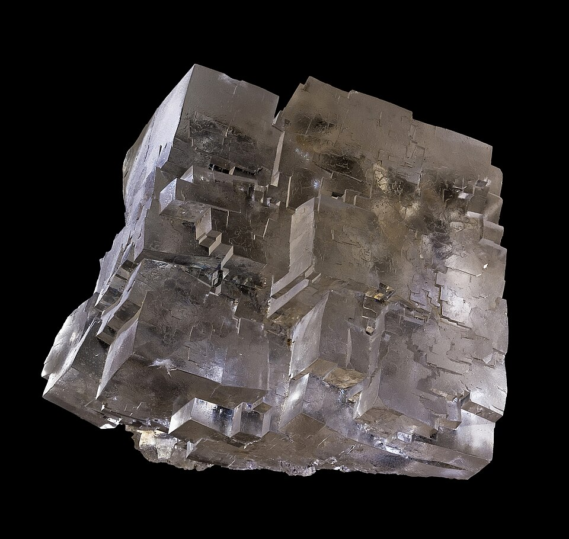
Rock salt is composed of the mineral halite (NaCl). It is unmistakably identified by its salty taste. It exhibits perfect cubic cleavage — breaking into perfect cubes along three mutually perpendicular planes. Hardness is about 2.5, so a fingernail barely scratches it but a penny does.
Precipitates after gypsum during evaporation of seawater or saline lakes. Requires extreme evaporation (evaporation of about 10 times the original volume of seawater). Important economically — Pennsylvania has major halite deposits from ancient Silurian evaporite basins.
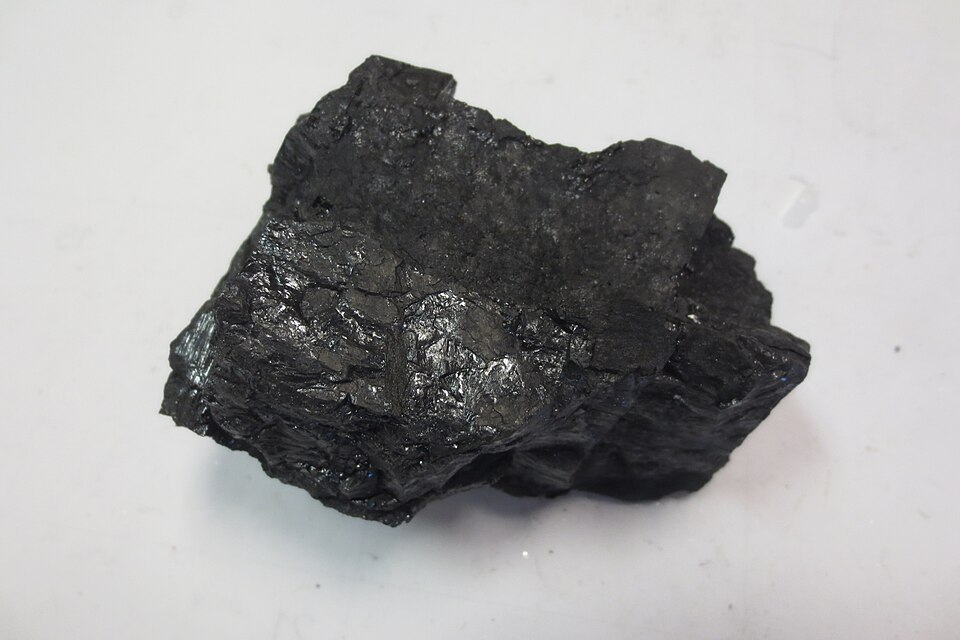
Bituminous coal is a mid-grade coal with significant carbon content. The vitreous (glass-like) luster and black color, combined with low density and combustibility, make it distinctive. It is an organic sedimentary rock — the lithified remains of ancient swamp vegetation.
Pennsylvania is famous for both bituminous coal (western PA) and anthracite coal (northeastern PA — Scranton/Hazleton area). Anthracite has even higher carbon content, a brighter metallic luster, and breaks with conchoidal fracture. It represents deeper burial and greater heat than bituminous coal.
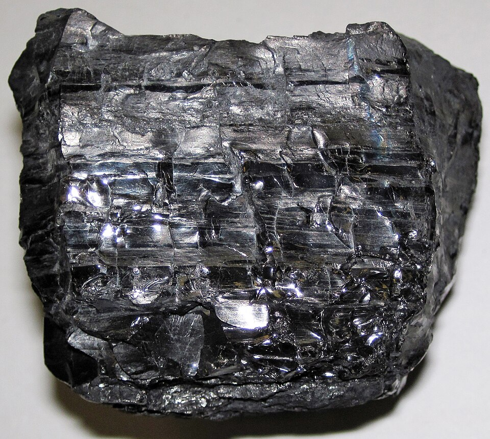
Anthracite coal — note the bright vitreous, sub-metallic luster compared to bituminous.Swamps and tropical forests — Carboniferous (~300 Ma) Pennsylvania was located near the equator and covered with vast coal swamps. Plant material accumulated as peat, then was buried and compressed through millions of years to form coal.
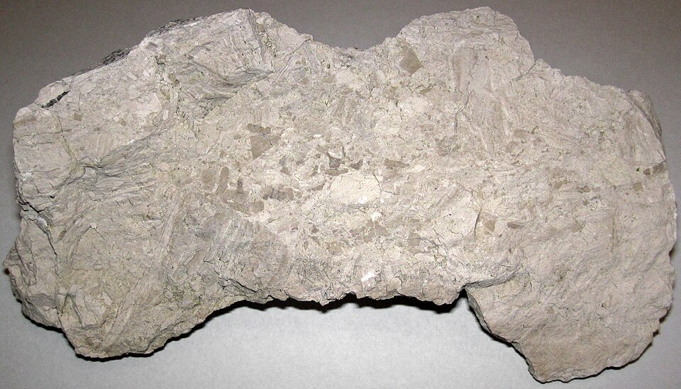
Dolostone is composed of the mineral dolomite — a calcium-magnesium carbonate. It superficially resembles limestone but the key distinction is the acid test: dolostone reacts weakly (or not at all) with cold dilute HCl, while the same rock powdered into a scratch mark will fizz more strongly.
Small crystal-lined cavities (vugs) are a helpful indicator — they form during dolomitization as magnesium replaces calcium, slightly shrinking the crystal structure and creating void space.
Most dolostone forms through dolomitization — chemical replacement of limestone by magnesium-rich fluids after deposition. This is called a secondary or diagenetic process. True primary precipitation of dolomite is rare in modern environments.